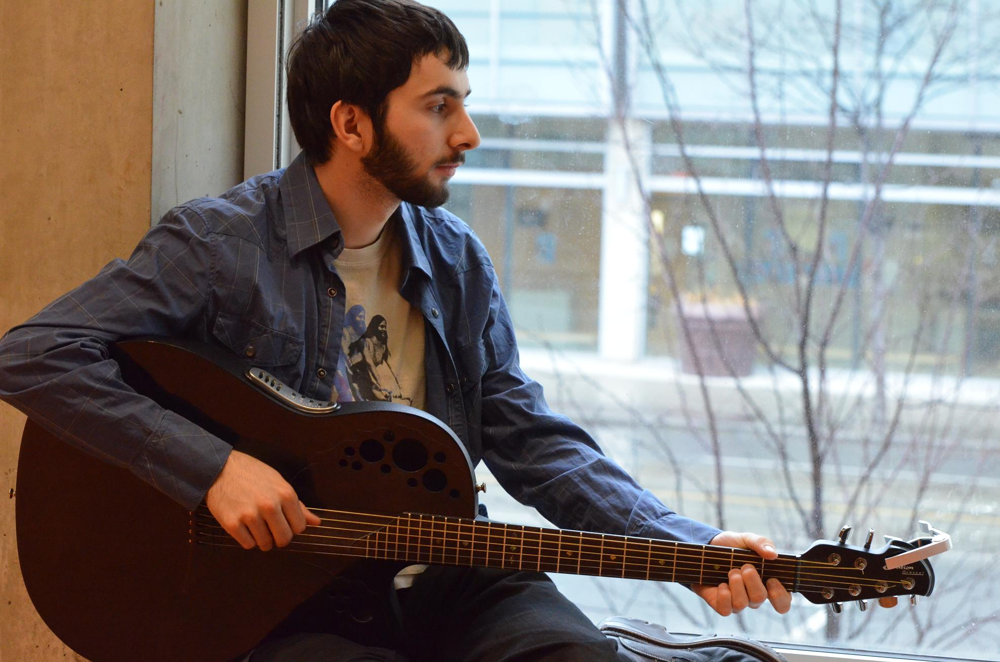
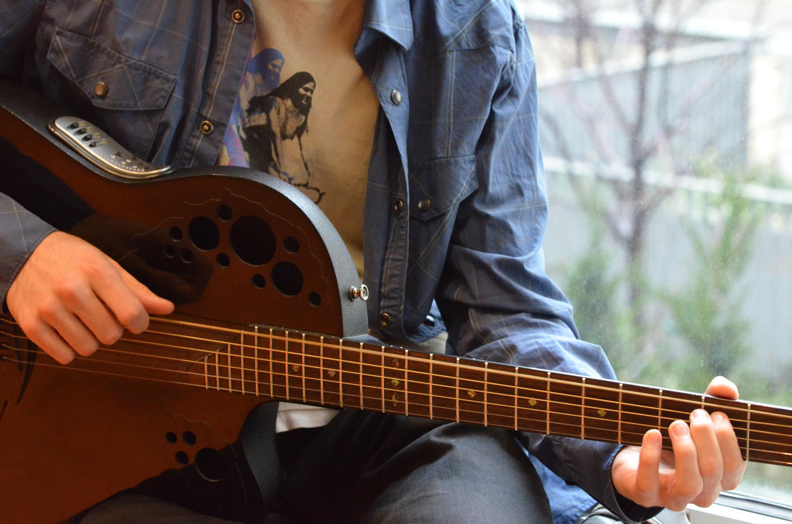
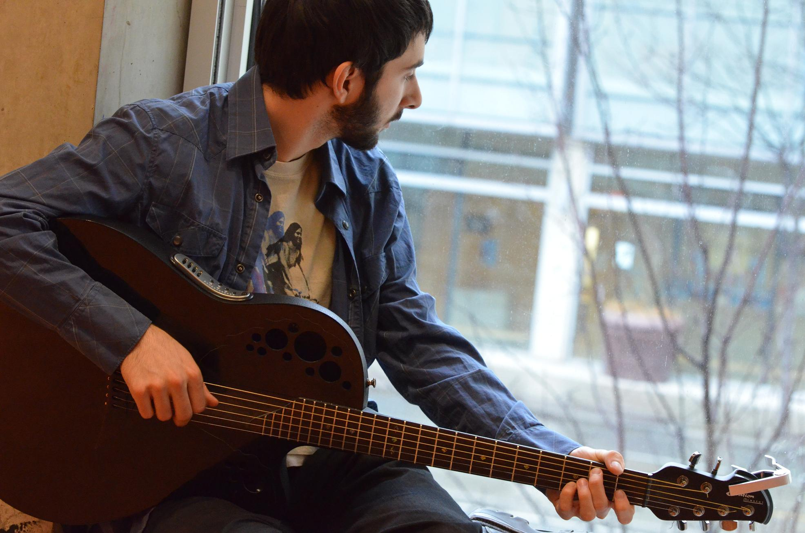

Writing and Photographs by Vjosa Isai
M@R Spotlight Editor in Chief
vjosa.isai@ryerson.ca
Uploaded on March 24, 2013
"You know how Kandinsky heard sounds when he was painting, like each colour represented a different pitch? I think it's called synesthesia… Well, I have that same thing. Looking at his paintings are looking at music."
Dante Matas, winner of Musicians@Ryerson's first ever Battle of the Bands, always wanted to approach music differently. Matas' creative fire to explore unconventional sounds was kindled from the moment he saw Mozart being portrayed as someone eccentric enough to play the piano with hands behind his head in the movie Amadeus.
Matas started playing piano and songwriting at the age of 8. After his Grade 5 Royal Conservatory of Music exams, Matas opted to teach himself piano instead of going through formal training. He is also self-taught in guitar after taking only a few lessons when he was 12 years-old.
"Playing guitar is better than piano because you can play wherever you want," says Matas. "I also thought guitar looked cooler."
The third-year ACCS Philosophy major started his first band in Grade 9. Since then, he has released two albums, one with his band, Reality Control, and one as a solo artist.
His band's first full length album, "Pixelated Nonsense", boasts production in a total of seven studios, many of which were the bandmates' basements. During the two-and-a-half years of laborious recording and mixing, Matas continued to work on new music.
Those creations would later be compiled into his first EP album as a solo artist, "More Lost Than You," which was officially released less than a month ago. "It felt great to finally play them in front of people for the first time," Matas smiles.

Matas describes his creative process in composing lyrics to be lonely, but rewarding. He generally holds off on lyrics until the music is completely finalized.
"I put a lot of thinking into my lyrics," he explains. "In the meantime, while I'm waiting for that one line, I come up with many other details that I can throw into the song."
Detailing is a distinct marker of Matas' music. Acoustically, his sound is mellow and textured with beautiful harmonies that are achieved by finger-picking, a technique often used in classical guitar music. It allows Matas to "emulate the band" by playing non-adjacent strings with different fingers. As a result, he is able to layer multiple parts under his melodies.
"The art is in putting the two [music and lyrics] together," Matas says with finality. "Often I'll write a song and keep changing something until it stands out. Sometimes it takes completely destroying and rebuilding a song to make it sound unique."
Marrying the perfect word to the right pitch and sound is something Matas strives for in his creative process. Although he easily finds inspiration for lyrics in everything from existentialist philosophers to Leonard Cohen's music, channeling his creative energy and "...following through with it takes time," he says.

While a central theme in Matas' music may be confusion, this young Rye musician is certainly clear on his goals for the future. In addition to playing at various venues downtown and open mic nights (including our very own Open Mic, Tuesdays from 2-4pm at the Ram in the Rye), Matas is trying make a greater presence online through social networking and YouTube. "I've also sent the albums to a bunch of different producers that have similar sounding musicians on their label," he explains.
Upon graduating from Ryerson, Matas wants to devote a couple of years to focusing on his music, by touring and continuing to compose. He is also considering continuing with his education and perhaps getting a Master's degree or teaching Philosophy.
Spotlight Editor in Chief
Vjosa Isai
vjosa.isai@ryerson.ca
Want to get your time under the lights? Are you a writer looking to join the Artist Spotlight initiative? E-mail us at music@ryerson.ca to see how!